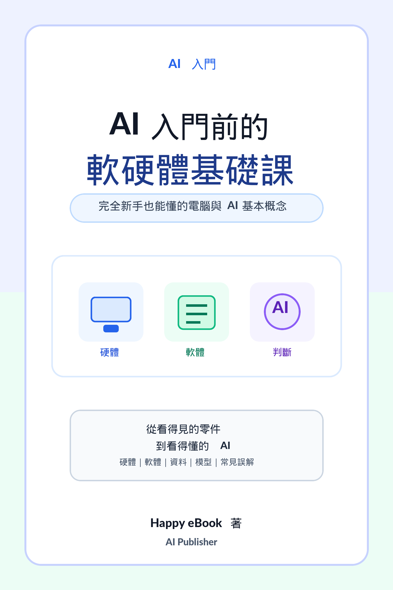

作品
AI 入門前的軟硬體基礎課
完全新手也能懂的電腦與 AI 基本概念

Google Play BooksAI 學習 / 電腦入門 / 軟硬體基礎 / 自學
AI 入門前的軟硬體基礎課
完全新手也能懂的電腦與 AI 基本概念
《AI 入門前的軟硬體基礎課》寫給想學 AI、但對電腦硬體、軟體、資料、模型與基本判斷還不熟的初學者。本書用白話方式整理看得見的硬體、看不見的軟體、資料如何被使用、AI 模型如何做判斷，以及常見名詞與誤解，幫助讀者先建立穩定的電腦與 AI 基礎概念，再進入更進階的工具操作與應用學習。